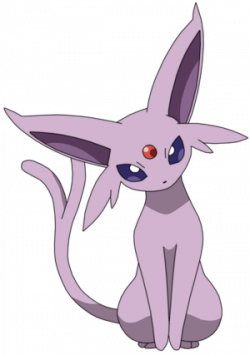

Eevee is a kindhearted soul that has a special ability to evolve into eight different types of elements!

Glaceon is the ice evolution of Eevee, but she isn't part of the original trio "Eeveelutions".Those ones are Flareon, Vaporeon, and Jolteon!
Click here to look up the original trio!
Espeon is a psychic pokemon, and you can only evolve Eevee into her by leveling up her friendship during certain hours of the day.
Click here to read more on Espeon.
| Names | Elements | Evolution Materials |
|---|---|---|
| Flareon | Fire | Fire stone |
| Vaporeon | Water | Water stone |
| Jolteon | Electric | Thunder stone |
| Glaceon | Ice | Ice stone |
| Leafeon | Grass | Leaf stone |
| Espeon | Psychic | Walking 10km (6 miles) with Eevee during the day |
| Umbreon | Dark | Walking 10km (6 miles) with Eevee at night |
| Sylveon | Fairy | Eevee needs to learn a Fairy type move. Go to Pokémon Refresh via the menu and earn two hearts by feeding it Poké Beans and petting it. |